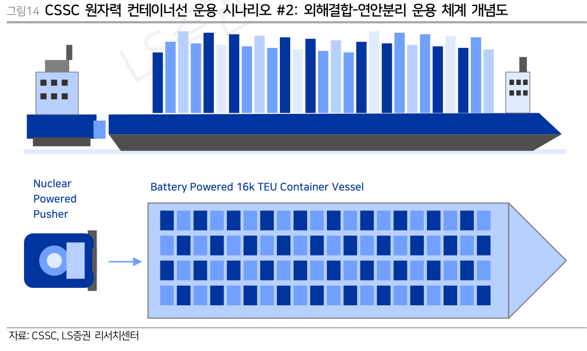

조선 선종과 기술 — 탱커는 호황, LNG선은 «물량 대기», 연료는 LNG 이중연료가 표준이고 암모니아·원자력은 아직 시험대
한눈에 보기
결론
- 2026년 발주를 끈 건 탱커(척수 +121%)·LPG선(+169%). 한국 주력 LNG선은 90척(+72%)이지만 대형선은 전망(115~150척)에 못 미침 (NH 11-16; 유안타 11-12)
- LNG선 수요의 본체는 미국 액화 프로젝트(건설 중 451척 중 53%) → FID와 발주 사이 1~3년 시차가 «2027년 반등»의 근거 (미래에셋, 2026-11-19)
- 연료는 신조 대체연료선의 사실상 100%가 LNG 이중연료(DF) (DS, 2026-03-31). 암모니아는 비용·독성, 원자력은 수용성·항만 규제가 벽
| 선종 | 2026 발주(척, YoY) | 신조선가(백만$) | 한국 위치 | 출처 |
|---|---|---|---|---|
| 탱커 | 707 (+121%) | VLCC 131.5 | VLCC 일부, 중국 주도 | (NH 11-16; SK 11-15) |
| LNG선 | 90 (+72%) | 245.0 | 주력, 중국 추격 | (NH 11-16; SK 11-15) |
| 컨테이너선 | 742 (+2%) | 23K 239.0 | 대형도 중국 집중 | (NH 11-16; SK 11-15) |
| LPG선 | 145 (+169%) | 116.0 | 2027 1순위 선종 | (NH 11-16; 대신 10-28) |
| PCTC | 122 (+638%) | 95.0 | 일부 | (NH 11-16; SK 11-15) |
flowchart TB subgraph 수요["선종별 수요 동인"] T["탱커<br/>제재·호르무즈·노후선"] L["LNG선<br/>미국 액화 FID"] C["컨테이너선<br/>교체 vs 공급과잉"] G["LPG·VLAC<br/>유럽 LPG·암모니아"] end subgraph 기술["기술 축"] H["화물창<br/>멤브레인 Mark III·NO96"] F["연료<br/>LNG DF → 메탄올·암모니아"] N["원자력 추진<br/>MSR·푸셔"] end R["규제<br/>IMO NZF·EU ETS·ECA"] --> F R --> N L --> H F --> T F --> C
구성: NH(2026-11-16) 선종별 발주, DS(2026-03-31) 연료 전환, LS(2026-06-23) 원자력·암모니아, SK(2026-05-04) IMO 규제를 엮음
원천 한계
- 캐시 245건 중 2026년 225건, 2025년 19건(대부분 보냉재 기업 리포트), 2024년 1건 → 기술 설명은 2025년 보냉재 리포트, 수요·가격은 2026년 산업물 위주
- 벌크선·PCTC·컨테이너선 전용 산업 리포트는 원천 0건 → 주간물·연간전망의 단편만 ⚠
- 관련 노트: 00_조선_index · 01_조선_용어집 · 02_조선_발주와선가 · 04_조선_해양과특수선 · 05_조선_기자재 · 06_조선_시장규모모델 · 07_조선_하우스시각_변경이력 · 08_조선_트래킹캘린더
① 기초: 상선 선종 지도
요약
- 한국 = 고난도 가스선(LNG·VLGC·VLAC)·대형 탱커 일부. 중국 = 벌크·컨테이너·탱커 전 선종 + 가스선 추격
- 선가는 LNG선이 VLCC의 약 1.9배 → 같은 도크로 더 큰 매출
| 선종 | 싣는 것 | 대표 크기 | 선가(백만$) | 강한 나라 |
|---|---|---|---|---|
| VLCC | 원유 | 32만DWT | 131.5 | 중국>한국 |
| 수에즈막스 | 원유 | 15.7만DWT | 90.5 | 중국·한국 |
| MR 탱커 | 석유제품 | 5.1만DWT | 52.5 | 중국·한국 중형 |
| 케이프사이즈 | 철광석·석탄 | 18만DWT | 76.5 | 중국·일본 |
| 컨테이너선 | 컨테이너 | 13K·23K TEU | 174·239 | 중국>한국 |
| LNG선 | 액화천연가스 | 17.4만㎥ | 245.0 | 한국>중국 |
| VLGC | LPG | 8.8~9.1만㎥ | 116.0 | 한국·중국 |
| VLAC·VLEC | 암모니아·에탄 | 대형 가스선 | ⚠ | 중국 확대 |
| PCTC | 자동차 | 7,000CEU급 | 95.0 | 중국 |
선가: SK(2026-11-15) 신조선가 Table(Clarksons). 강한 나라: KB(2026-07-06) 수주 믹스, 유안타(2026-11-12) 선종별 점유율. VLAC·VLEC 선가 원문 없음 ⚠
② 전방 수요: 선종별로 다른 사이클
요약
- 탱커: 제재·전쟁·노후화가 겹친 «교체+운임» 사이클. 11월 들어 운임 프리미엄은 빠르게 빠지는 중
- LNG선: 액화 FID는 역대급인데 선박 발주가 못 따라옴(디커플링) → 2027년 반등 기대 vs 선복 과잉 반론
- 컨테이너선: 2027~29년 인도 폭증 → 공급과잉. LPG·VLAC: 유럽 LPG·암모니아 수요로 한국의 대안 선종
탱커 — 제재·전쟁·노후선
| 지표 | 값 | 출처 |
|---|---|---|
| 2026 VLCC 발주 | 234척(사상 최대) | (NH 11-16) |
| 8월말 수에즈막스 발주 | 71척 | (SK 09-17) |
| 그림자 선대(제재 관련) | 선대의 16~24% | (유안타 03-04) |
| 20년 초과 VLCC 비중 | 12.5% | (SK 09-17) |
| 20년 초과 수에즈막스 | 16.8% | (SK 09-17) |
| VLCC 잔고/선대 | 32.5% | (대신 10-28) |
| VLCC 5년 중고 vs 신조 | 162 vs 131백만$ | (SK 09-17) |
- 수요를 만든 순서
- 코로나 때 컨선은 호황, 탱커는 불황 → 1990년대 인도분 교체가 미뤄져 선령이 사상 최고 (유안타, 2026-03-04)
- 운임 기여도: 그림자 선대 퇴출 14~22% vs 호르무즈 톤마일 2~7% → 제재가 본체 (유안타, 2026-03-04)
- 수에즈막스 선대는 10년간 +42%(아프라막스 +11%) → 대형화(캐스케이딩) 수혜 (유안타, 2026-03-04)
- 꺾임 신호
- 1Q26 VLCC 발주 2,614만DWT(역대 최대), 인도는 2028년 말 집중 → 그 전엔 과잉 아님 (대신, 2026-10-28)
- 11/13 주 VLCC 운임 −42%(29.3만$/일) → 종전 기대에 프리미엄 축소 (신영, 2026-11-16)
LNG선 — FID는 역대급, 발주는 대기
xychart-beta title "LNG선 필요 vs 인도예정 (척, 연도별)" x-axis ["2026", "2027", "2028", "2029", "2030", "2031"] y-axis "척" 0 --> 160 line [14, 109, 107, 50, 144, 147] line [36, 99, 77, 66, 16, 6]
위 선 = 프로젝트 기준 필요 선박(U/C+FEED 누적 막대 합, 그래프 판독, 근사), 아래 선 = 인도예정. 2030·31년 격차 +128·+141척. 자료: 미래에셋(2026-11-19, Clarksons) p.17
| 항목 | 값 | 출처 |
|---|---|---|
| 건설 중 프로젝트 필요 선박 | 451척(미국 53%) | (미래에셋 11-19) |
| FEED 단계 | 271척(미국 63%) | (미래에셋 11-19) |
| Proposed | 944척(미국 62%) | (미래에셋 11-19) |
| 31년까지 추가 발주 필요 | 269척 | (미래에셋 11-19) |
| 2026 LNG선 발주(~9월) | 68척(하반기 13척) | (미래에셋 11-19) |
| 17.4만㎥+ 대형 발주 | 76~78척 | (유안타 11-12) |
| 연초 발주 전망 | 115~150척 | (유안타 11-12) |
| 2030~32 필요 | 319척 | (DS 10-27) |
- 왜 발주가 늦나
- 2025~26년 FID 105mtpa(LNG선 약 200척 필요) 대비 연계 발주는 21척뿐 (미래에셋, 2026-11-19)
- 이유 ①글로벌 발주 둔화 ②중국 점유율 확대 (미래에셋, 2026-11-19)
- 반론: 전쟁 전부터 선복 과잉 → 싼 용선이 신조를 대체. 톤마일 회복은 2028년 (유안타, 2026-11-12)
- QatarEnergy가 새 LNG선 5척을 1년 용선 내놓음(일 7만$대) → 과잉 신호 (다올, 2026-05-31)
- 카타르 손상 액화설비 약 16mtpa, 복구 2029년(Clarksons) (유안타, 2026-11-12)
- 왜 2027년엔 나아진다고 보나
- 2027년 신규 가동 63.5mt(액화용량 +12%), EU 러시아산 LNG 금지 → 톤마일 증가 (미래에셋, 2026-11-19)
- 2030년 이후는 이미 맺은 장기공급계약(SPA)만으로 연 100척+ vs 글로벌 건조 캐파 연 90~100척 (DS, 2026-10-27)
- 미국 408척 × 246.5백만$ = 약 1,006억$ → 7년 분산 시 연 58척 (미래에셋, 2026-11-19)
- GTT는 2035년까지 LNG선 발주 전망을 450 → 550척으로 상향 (SK, 2026-09-17)
컨테이너선 — 교체 발주 vs 공급과잉
- 2027~29년 인도 예정 선복이 빠르게 늘어 공급과잉 → 운임 약세 전망 (대신, 2026-10-28)
- 그래도 MSC·COSCO 초대형선, 8,000TEU 이하 피더·중소형 교체 발주로 2024~25년 수준 물량 유지 (DS, 2026-09-29)
- 선사들은 노후선 해체 가속·감속 운항으로 대응하겠다는 입장(머스크 3Q 콜) (삼성, 2026-11-17)
- 23K 컨선 선가 3개월 −6.1%, 9주 연속 하락 → 중국 대형 컨선 수주 확대 영향 (NH, 2026-11-09·11-16)
LPG선·VLAC·PCTC
| 선종 | 수요 동인 | 리스크 | 출처 |
|---|---|---|---|
| VLGC(LPG) | 유럽 LNG 차질 → LPG 대체 | 중국 점유율 40% 근접 | (대신 10-28; 유안타 11-12) |
| VLGC(LPG) | 미국산 lean LNG 열량 보완 | ⚠ | (메리츠 10-19) |
| VLAC(암모니아) | 무탄소 연료·수소 운반 | 8.5만㎥+ 공급 포화 | (LS 06-23) |
| MGC(중형 가스선) | 유럽 항만 수심·제티 제약 | ⚠ | (LS 06-23) |
| PCTC | 중국 완성차 수출 | EU 하이브리드 수입 축소 | (대신 10-28) |
대신(2026-10-28): EU·중국 합의로 PCTC 수요 최대 2~3% 감소 가능, 남미 수요 유지로 하방 제한. NYK 인터뷰(LS 2026-06-23): VLAC 대형선 과잉, MGC 수요 팽창 전망
③ 기술 심화
요약
- LNG 화물창 = GTT 멤브레인 독점(Mark III·NO96). 기화율(BOR) 0.05%p 차이가 1항차 손실 약 1%p 차이
- 추진 연료 = LNG DF가 표준. 다음 DF 주자는 노후선 많은 VLCC·중소형 컨선. 한국 엔진은 메탄 슬립이 중국의 절반 이하
- 차세대 = 암모니아(DF 엔진 개발 완료, 연료·안전이 병목), 원자력(MSR 개념승인 단계)
LNG 화물창: 멤브레인 vs 독립형

출처: IBK투자증권, 2025-10-27, p.18
- 무엇: −163℃ LNG를 담는 탱크. 냉기가 선체로 새면 강재가 깨짐 → 단열(보냉재)이 핵심 (SK, 2025-09-03)
- 멤브레인형: 선체가 탱크를 직접 지지, 얇은 금속막+단열 패널 → 공간 효율 최고 → 대형 LNG선 표준
- 독립형: Type B(구형 Moss)는 공간 효율 나쁨, Type C(원통형)는 소형 LNG선·LNG 추진선 연료탱크
- 2024년 LNG선 발주의 95% 이상이 멤브레인형 (대학 리서치팀 보고서, 2025-11-11 — 증권사 자료 아님)

출처: SK증권, 2025-09-03, p.8
| 항목 | Mark III | NO96 |
|---|---|---|
| 1차 방벽 | 스테인리스강 주름막 | 인바강(니켈 36%) |
| 단열재 | 강화 폴리우레탄 폼(R-PUF) | 펄라이트 충전 합판 박스 |
| 2차 방벽 | 트리플렉스 | 인바강 |
| 기화율(BOR) | 0.07% | 0.10% → Super+ 0.085% |
| 주 채택 | HD현대·삼성중공업 | 한화오션·중국 일부 |
자료: SK(2025-09-03) 구조·채택, 미래에셋(2026-03-27) BOR·NO96 Super+(2022 출시). Super+에 R-PUF가 혼용되며 Mark III 소재 업체의 고객이 한화·중국으로 확대(DB, 2026-05-23)
- 기화율이 왜 중요한가
- BOR 0.10% vs 0.15%로 20일 항해 시 손실 1.98% vs 2.96% → 0.05%p 차이가 1항차 약 1%p 손실 차이 (IBK, 2025-10-27)
- 카타르 등 핵심 수출국이 0.1% 미만 요구 → NO96 개량 압력 (미래에셋, 2026-03-27)
- 라이선스 구조
- 멤브레인 원천기술은 프랑스 GTT 독점 → 조선사가 척당 약 50억~100억원 로열티 지급 (신한, 2026-04-13)
- 보냉재는 LNG선 선가의 5~7% (IBK, 2025-10-27)
- 국산 화물창 KC-1은 콜드스팟 결함 → 2심도 가스공사 책임 인정(SK해운 2,200억원·삼성중공업 480억원) (SK, 2026-11-15)
- 보냉재·화물창 업체 구조는 05_조선_기자재
추진 연료: LNG DF가 표준, 다음은?
| 연료 | 현재 위치 | 장점 | 벽 | 출처 |
|---|---|---|---|---|
| LNG(DF) | 대체연료선의 100% | 벙커링망·경제성 | WtW 기준 시 불리 | (DS 03-31; LS 06-23) |
| 메탄올 | 벙커 판매 5배↑ | 상온 액체 | 그린 메탄올 인프라 부재 | (신한 04-13) |
| 암모니아 | DF 엔진 출시 | 무탄소 | 비용·독성·부피 | (LS 06-23) |
| 원자력 | 개념승인(AiP) | 무탄소·벙커링 불필요 | 수용성·항만 규제 | (LS 06-23) |
메탄올 벙커 판매 300톤 → 1,600톤(신한, 2026-04-13, 단위·기간 원문 표기 그대로). 1Q25 D/F 엔진 수주 비중 65% 상회(신한, 2026-04-13)
- LNG DF는 «과도기 표준»
- 2026년 신조 시장 대체연료선 중 LNG DF 비중 100% → 벙커링망·경제성 (DS, 2026-03-31)
- 적용 순서: 컨테이너선 → 탱커 → 벌크선 (DS, 2026-03-31)
- 다음 DF 주자 = 노후선 비중 20% 넘는 VLCC·중소형 컨선. DF 프리미엄 컨선 10~20%, 탱커 20~25% (DS, 2026-09-29)
- 약점: 현행 TtW(연소 단계) 기준에선 유리하지만, WtW(생산~연소) 기준이 되면 메탄 슬립 때문에 친환경성 급락 (LS, 2026-06-23)
| 엔진 성능 | 한국 | 중국 |
|---|---|---|
| 메탄 슬립(고압 ME-GI) | 0.15~0.25% | 0.35~0.50% |
| 메탄 슬립(저압 X-DF·ME-GA) | 1.0~1.5% | 2.0~2.8% |
| 연료소비율(g/kWh) | 132~134 | 136~139 |
| 피스톤 링 수명(시간) | 18,000~24,000 | 12,000~15,000 |
자료: DS(2026-09-29, MAN·WinGD). 2026년부터 EU ETS에 메탄 포함 → 유럽 선주의 한국 엔진 지정 발주 선호. 엔진 산업 상세는 05_조선_기자재
암모니아: 무탄소지만 비싸고 위험함
| 항목 | 값 | 출처 |
|---|---|---|
| 체적 에너지밀도 | 13.1GJ/㎥ | (LS 06-23, LR) |
| 비교: LNG·메탄올 | 21.6·15.7GJ/㎥ | (LS 06-23, LR) |
| 필요 탱크(MGO 대비) | 2.94배 | (LS 06-23, LR) |
| 그린 암모니아 생산비 | 톤당 720~1,400$ | (LS 06-23, IRENA) |
| 그레이 대비 | 5~6배 | (LS 06-23, IRENA) |
| 수요 2020→2050 | 183→688Mt | (LS 06-23, IRENA·LR) |
| 그중 선박연료 | 197Mt | (LS 06-23) |
- 경제성 갈림길: 암모니아 650
/톤·탄소세 350/톤이면 VLSFO보다 쌈, 1,200·100면 붕괴 (LS, 2026-06-23, LR 시나리오) - 엔진은 준비됨: Wärtsilä 25(4행정, 중소형·보조엔진 먼저), Everllence ME-LGIA(2행정, 대형 주엔진) → 병목은 연료 공급·안전 (LS, 2026-06-23)
- 초기 시장 = PCTC(고정 항로·장기계약). «Ammonia-Ready» 개조는 비싸고 정의도 불명확 → 선사 회의적 (LS, 2026-06-23, NYK 인터뷰)
- NYK: 암모니아 추진선 15척(2033년까지), 첫 예인선 혼소율 최대 95.2% (LS, 2026-06-23)
원자력 추진: 넷제로의 종착역 후보

출처: LS증권, 2026-06-23, p.10 (CSSC 자료)
- 원리: 소형 원자로(MSR 용융염로 등)로 전기 생산 → 추진. 운항 중 CO2·NOx·SOx 0 → NZF·EU ETS·FuelEU 모두 대응 (LS, 2026-06-23)
- 기존 대비: 연료비보다 원자로 고정비가 큼 → 저속 운항 대신 고속으로 회전율을 올려 고정비 분산
- LR 연구: 15K TEU선 15→25노트 시 연간 왕복 5→6.3회, 연료탱크 제거 포함 수송능력 약 +38% (LS, 2026-06-23)
- CSSC 해법 = 원자로를 항만에 안 들임
- #1 외해 부유식 원자력 허브 항만, #2 원자력 푸셔가 외해에서만 결합·연안에선 배터리 운항(위 그림)
- 24.7K TEU 원자력 컨선 모델: 393×61.5m, MSR 400MWt (LS, 2026-06-23)
- 경제성 문턱: 8척 선대 25년 원자로 CAPEX+OPEX 38억$ 이하면 기존 연료선과 경쟁 가능 (LS, 2026-06-23, Core Power)
- 한국 진척: HD한국조선해양 등 MSR 탑재 7,000CEU PCTC 개념승인(LR), 원자로 통합 설계 ABS 개념승인, TerraPower SMR 주기기 우선협상 (LS, 2026-06-23)
- 모르는 것: 상용 발주 시점·보험·사용후핵연료 처리 ⚠. ABS는 «추진선보다 부유식 원자력 발전 바지가 먼저»로 봄 (LS, 2026-06-23)
규제 일정
| 구분 | 항목 | 2026 | 2027 | 2028 | |||||||||
|---|---|---|---|---|---|---|---|---|---|---|---|---|---|
| Q1 | Q2 | Q3 | Q4 | Q1 | Q2 | Q3 | Q4 | Q1 | Q2 | Q3 | Q4 | ||
| IMO | NZF(중기조치) | MEPC85 재표결 | 채택 시 탄소비용 부과 시작 | ||||||||||
| IMO | 북동대서양 ECA | NOx Tier III(27년 이후 건조선) | 황 0.10% | ||||||||||
| EU | ETS 해운 | 배출량 100% 적용·메탄 포함 | |||||||||||
| 미국 | USTR 대중 제재 | 유예 중 | 유예 종료 1/10 | 입항료 110$/NT | |||||||||
| LNG | 미국 신규 액화 | 신규 가동 63.5mt | CP2 첫 생산 | ||||||||||
| 원자력 | 해상 원자력 | MSR PCTC AiP | |||||||||||
자료: SK(2026-05-04) MEPC84 결과·ECA, SK(2026-09-17) MEPC85 일정(11/30~12/3, 12/4 투표), 신한(2026-04-13) EU ETS 단계, DS(2026-09-29) 메탄 포함, 메리츠(2026-10-19) USTR, 미래에셋(2026-11-19) 2027 신규 가동, NH(2026-11-16) CP2, LS(2026-06-23) AiP. 진한 칸 = 시행·확정, 밝은 칸 = 이정표, 점선 = 조건부
- IMO NZF(넷제로 프레임워크)
- 2025-10 MEPC ES.2에서 연기 → 2026-04 MEPC84도 합의 실패 → MEPC85로 (SK, 2026-05-04)
- 반대: 미국·그리스·사우디 등 OPEC·개도국이 수적 우위 → 약한 안 또는 재연기 가능성 높음 (SK, 2026-05-04·09-17)
- 시행 시 VLCC 탄소세 하루 최소 3,210
, 20년 운항 시 척당 2,000만+ (DS, 2026-03-31) - 50% 완화 기준으로도 컨벤셔널선은 선가의 20~30%를 탄소비용으로 부담 (DS, 2026-09-29)
- MEPC84에서 실제로 바뀐 것: SEEMP(에너지효율 관리계획) 검증 강화, 연료 규제 LCA·GFI(WtW) 정교화, 평형수 실성능 검증, 북동대서양 ECA 지정 (SK, 2026-05-04)
④ 캐파: 선종별 «누가 지을 수 있나»
요약
- LNG선 건조 캐파는 글로벌 연 90~100척, 중국은 연 20~25척 → 2026년 LNG선 수주의 42%를 중국이 가져감
- 중국 LNG선 건조 조선소는 헝리까지 6곳으로 늘어남 → «한국만 짓는 배»라는 전제가 약해짐
| 항목 | 값 | 출처 |
|---|---|---|
| 글로벌 LNG선 연간 캐파 | 약 90~100척 | (DS 10-27) |
| 중국 LNG선 연간 캐파 | 20~25척 | (DS 10-27) |
| 2026 중국 LNG선 수주 | 32척/76척(42%) | (DS 10-27) |
| 중국 2030 슬롯 | 60%+ 채움 | (DS 10-27) |
| 중국 LNG선 인도 점유율 | 14%→32% | (유안타 11-12) |
| 중국 LNG선 건조사 | 6곳(헝리 포함 예정) | (SK 09-17) |
인도 점유율 14% = 2021~25년, 32% = 2026~30년 인도 예정분. 6곳: 후둥중화·양쯔신푸·다롄·CMHI·장난 + 헝리(SK, 2026-09-17)
- 중국 진입 사례
- 2026년 1월 TMS Cardiff Gas·Eastern Pacific이 처음으로 중국에 LNG선 발주 → 한국 핵심 고객 이탈 가능성 (유안타, 2026-11-12)
- Adnoc L&S가 장난조선과 4척 협의, Shell은 장난에 8척 슬롯 선점 (다올, 2026-05-31)
- 헝리는 LNG선 2척을 선주 없이 먼저 짓는 재고 판매 방식 (메리츠, 2026-10-19)
- 한국이 지키는 것
- 미국 USTR 제재로 미국 LNG 프로젝트용 LNG선은 사실상 한국 3사 몫이라는 논리 (SK, 2025-09-03)
- 단, 미·중 정상회담 후 제재 유예(2027-01-10까지) → 논리 약화 구간 (메리츠, 2026-10-19)
- 국가별 전체 캐파·증설은 02_조선_발주와선가 ④장
⑤ 가격·수급: 선종별 온도차
요약
- 탱커: VLCC 5년 중고선가가 신조선가를 약 25% 웃도는 역전(8/28) → 신조 발주 유인 최대 (SK, 2026-09-17)
- LNG선: 공시가 260 → 245백만
(24말 대비 −5.8%). 한국 계약가는 247~254백만로 프리미엄 유지- 운임: 11월 탱커 −20~47% 급락, LNG선 스팟 일 4.85만$ → 가스선 해운은 여전히 약함
| 선종 | 운임·수익(최근) | 신조선가 방향 | 출처 |
|---|---|---|---|
| VLCC | 29.3만$/일(−42% w-w) | 131.5 보합 | (신영 11-16; SK 11-15) |
| 수에즈막스 | 27.0만$/일(−22.5%) | 90.5 보합 | (신영 11-16) |
| LNG선(17.4만㎥) | 4.85만$/일(−9.8%) | 245 약세 | (신영 11-16) |
| VLGC(미주-아시아) | 18.5만$/일(−5.0%) | 116 반등 | (신영 11-16; NH 11-02) |
| 케이프사이즈 | 3.38만$/일(+9.4%) | 76.5 보합 | (신영 11-16) |
xychart-beta title "VLCC 신조선가 vs 5년 중고선가 (백만$)" x-axis ["25말", "2/20", "5/22", "8/28", "9/25", "10/2", "11/13"] y-axis "백만$" 100 --> 230 line [128, 128.5, 130.5, 131, 131, 131, 131.5] line [120, 135, 145, 162, 180, 215, 220]
아래에서 출발해 위로 꺾이는 선 = 5년 중고선가. 자료: 삼성 Weekly(2026-02-25~11-17) 지표표, 8/28은 SK(2026-09-17). 신조선가는 같은 날짜 삼성·SK 값. 삼성 표는 중고선 연식 표기 없음 ⚠ → 2월에 이미 중고가 우위, 9월 이후 격차 급확대(11/13 약 +67%, 내 계산)
- LNG선 가격 구조
- 2026년 LNG선 선가 하락의 주요인 = 중국 수주 확대 (DS, 2026-10-27)
- 한국 계약가: 254.4(6월, HD현대중공업) → 247백만$(11월, 올해 한국 평균보다 약간 낮음) (SK 09-17; 삼성 11-17)
- LNG DF 사양 22-24K 컨선은 2.39억$로 9주 연속 하락 후 멈춤 (NH, 2026-11-09·11-16)
- 계약가 상세·환율 효과는 02_조선_발주와선가 ⑤장
⑥ 하우스별 시각과 변화
요약
- 공통 시각: 탱커 발주는 노후선·제재로 2027년에도 이어짐(유안타·SK·대신·DS)
- 가장 크게 갈리는 질문: «LNG선 발주가 언제, 얼마나 돌아오나»
- NZF는 «방향은 맞고 시점이 문제»라는 데 SK·LS가 일치, 다만 12월 재연기 가능성 높음(SK)
엇갈림
| 질문 | 하우스 | 날짜 | 입장 |
|---|---|---|---|
| LNG선 발주 반등 | 미래에셋 | 11-19 | 1H27 반등, 31년 슬롯은 FID 러시 |
| LNG선 발주 반등 | DS | 10-27 | 30~32년 319척, 초과 수요 지속 |
| LNG선 발주 반등 | 유안타 | 11-12 | 즉각 반등 없음, 톤마일 회복 28년 |
| LNG선 발주 반등 | LS | 11-09 | 후속 프로젝트 결정 지연 유의 |
| 중국 LNG 경쟁 | 유안타 | 11-12 | 고객 이탈·점유율 32%로 잠식 |
| 중국 LNG 경쟁 | 삼성 | 09-28 | 한국 프리미엄 유지, 북미 수요는 한국 |
| NZF 채택 | SK | 05-04 | 약한 안 또는 추가 지연 가능성 높음 |
| NZF 채택 | LS | 11-09 | MEPC85에서 도입 가능성 더 가시화 |
| 암모니아 시기 | LS | 06-23 | 태동 중, 비용·안전이 병목 |
LS(2026-11-09) «미 중간선거 후 친환경 정책 방향성 변화 기대 유효, NZF 도입 가능성 가시화» vs SK(2026-05-04·09-17) «반대국 수적 우위, 재연기 가능성». 미래에셋 «Blue Wave 영향은 32년 슬롯부터»(2026-11-19)
바뀐 것
| 날짜 | 하우스 | 이전 | 이후 |
|---|---|---|---|
| 2026-07→10 | DS | 28~29년 LNG선 수요 188척 | 156척(지연) |
| 2026-07→10 | DS | 30~31년 LNG선 수요 200척 | 238척(이연) |
| 2026-09 | GTT(SK 인용) | 2035년까지 450척 | 550척 |
| 2025말→2026-11 | 유안타 | Clarksons·GTT 115~150척 전망 | 실제 76~78척 «예상대로 미달» |
DS(2026-10-27) «2026년 7월 추정 대비», SK(2026-09-17) GTT 실적발표 인용, 유안타(2026-11-12). 상세 이력은 07_조선_하우스시각_변경이력
⑦ 트래킹 포인트
| 시점 | 확인할 것 | 좋은 신호 | 나쁜 신호 |
|---|---|---|---|
| 2026-11-30~12-04 | IMO MEPC85·NZF 투표 | 채택 → DF 교체 발주 | 재연기 |
| 2026-11-26 | 아르헨티나 FLNG 2호기 FID | 한국 수주 | 중국(Wison) 독식 |
| 2027-01-10 | USTR 대중 제재 유예 종료 | 재개 → 미국향 LNG선 한국 | 유예 연장 |
| 2027 상반기 | 미국 LNG선 발주 재개 | 분기 20척+ | 용선 대체 지속 |
| 2027-07 | CP2 첫 생산 | 일정 준수 | 지연 |
| 매주 | VLCC 운임·중고선가 | 중고>신조 유지 | 중고가 급락 |
| 분기 | 중국 LNG선 신규 고객 | 이탈 멈춤 | 그리스·중동 선주 이탈 |
| 수시 | 원자력 추진 실선 발주 | 첫 상업 발주 | AiP 단계 정체 |
아르헨티나 FID·CP2 일정: NH(2026-11-16). MEPC85: SK(2026-09-17). 전체 일정은 08_조선_트래킹캘린더
한 줄: 2026년은 «탱커의 해», 2027년의 승부처는 미국발 LNG선 발주가 실제로 한국 도크로 오느냐와 12월 NZF 표결
출처 (펼쳐 보기)
- NH투자증권 글로벌 조선·해운 Weekly 2026-11-02·11-09·11-16
- SK증권 «LNG운반선과 보냉재 최강의 듀오» 2025-09-03, «IMO MEPC 84 NZF 합의 실패» 2026-05-04, «리레이팅의 조건» 2026-09-17, «한수위» 2026-11-15
- 유안타증권 «수에즈막스 유조선 하이퍼 사이클 초입» 2026-03-04, «상선 시장에 드리운 암운» 2026-11-12
- 미래에셋증권 «2027 전망 조선·엔진» 2026-11-19(스캔본 p.3·17·18 판독), «동성화인텍: LNGC 호황에 먼저 웃을 보냉재» 2026-03-27
- DS투자증권 «LNG 시대의 교집합» 2026-03-31, «엔진: 바다 위의 반도체» 2026-09-29, «지연되는 LNG프로젝트의 가동 시점» 2026-10-27
- LS증권 «POSIDONIA 2026: 내일의 바다» 2026-06-23, 조운날 Weekly 2026-11-09
- IBK투자증권 «냉각의 미학: 보냉재가 뜨겁다» 2025-10-27
- 대신증권 «2027년 산업전망 조선/해운» 2026-10-28
- 신한투자증권 «생산적금융 II» 2026-04-13
- 메리츠증권 조선 Weekly 2026-10-19
- 다올투자증권 «다올 선박» 2026-05-31
- 삼성증권 Shipbuilding/Machinery Weekly 2026-02-25~11-17, 주간 코멘트 2026-09-28
- 신영증권 조선/운송 Weekly 2026-11-16
- DB금융투자 한국카본 2026-05-23(기업 리포트, 산업 사실만)
- 대학 리서치팀 «4팀 한국카본» 2025-11-11(증권사 자료 아님, 멤브레인 점유율 1건만 인용)
다음 갱신 때 확인할 것
- MEPC85(12월) 결과 → 규제 일정 표·NZF 엇갈림 표 갱신
- 2026년 LNG선 연간 발주 확정치와 2027년 하우스별 척수 전망 수집(현재 미래에셋·DS만 수치)
- 벌크선·PCTC·컨테이너선 전용 산업 리포트 확보 — 원천 0건 ⚠
- VLAC·VLEC 신조선가 시계열 — 원천 없음 ⚠
- 암모니아 DF 첫 상선 발주·벙커링 터미널 착공 여부
- 원자력 추진선: AiP 이후 실선 발주·보험·항만 규정 진척